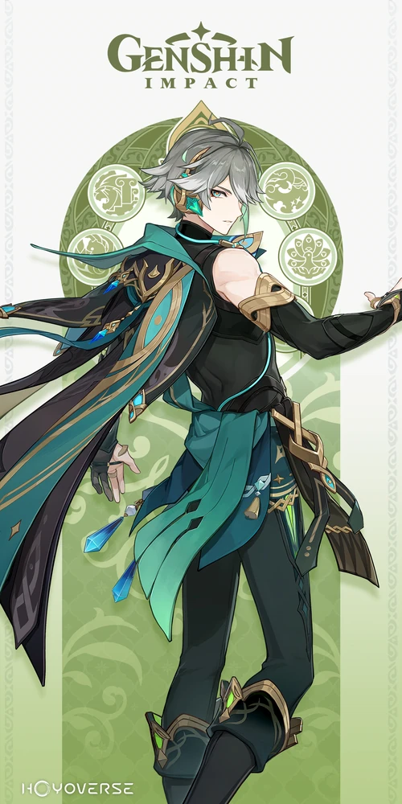
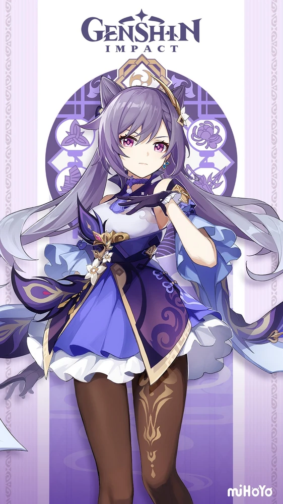
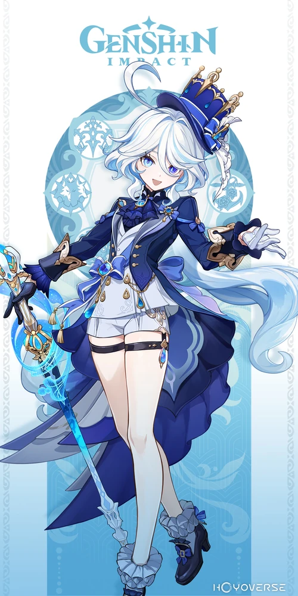
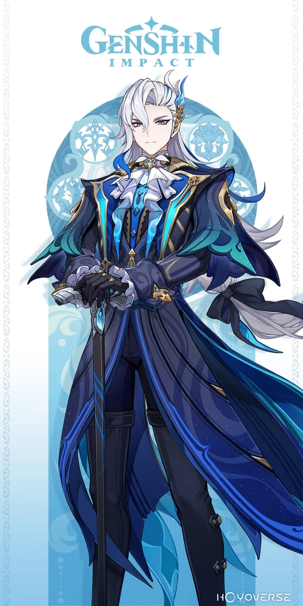

CHARACTER LIST
1.Alhaitham
2.Keqing
3.Furina
4.Neuvilleyte

Alhaitham
is a playable Dendro character in Genshin Impact.
Alhaitham is a member of the Haravatat of the Sumeru Akademiya and the Akademiya's Scribe, responsible for documenting their findings and drafting ordinances. Despite his brilliance, people within the Akademiya are perplexed by Alhaitham due to his unwillingness to aspire for higher office in spite of his egocentricity, and many have been at odds with him for his uncompromising view on rationality and the truth.

Keqing
is a playable Electro character in Genshin Impact.
As the Yuheng of the Liyue Qixing, she is someone who seeks her own answers instead of idly letting chaos run amok in Liyue. She chooses her own path with her own power and ability, instead of letting the gods determine her fate.

Furina
is an upcoming playable Hydro character in Genshin Impact.
As the God of Justice, Focalors, she oversees Fontaine as the current Hydro Archon.Undoubtedly, Furina has been much loved by the people of Fontaine from the moment she became the Hydro Archon.
Her charismatic parlance, lively wit, and elegant bearing — all bear witness to her godly charms.
But perhaps the thing that she is most revered for is her unrivaled sense of drama.
As the protagonist of a famous play at the Opera Epiclese once put it,
"Life is like the theater — you never can tell when the twist will come."

Neuvillette
is a playable Pneuma-aligned Hydro character in Genshin Impact.
Neuvillette is the Iudex of
Fontaine, and the leader of the Marechaussee Phantom. While Neuvillette upholds the rules of the court with
utmost reverence and frequently keeps Furina's flamboyancy in check, he is quite aloof when dealing with human
emotions and often distances himself from the public eye. Despite his human appearance, he is actually the Hydro
Sovereign, though not at his full power or dragonhood.